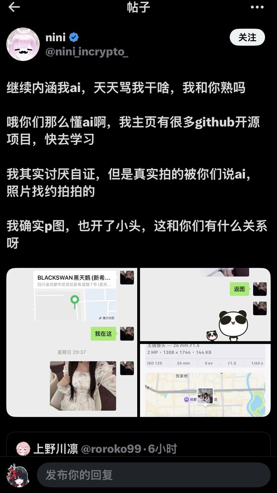
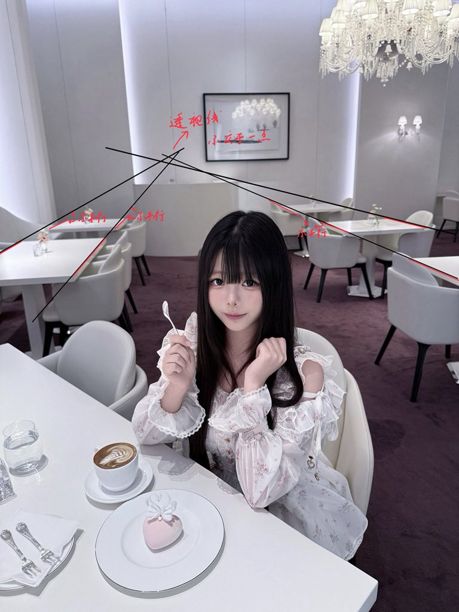

環状線补充声明：



由于此推文引起较大争议，環状線决定作出一些声明：
此推文是为了表达对 nini（ @nini_incrypto_ ）的两张图片的真实性的质疑。環状線并没有断定 nini 的图片 100% 虚假（此处定义一下「虚假」：完全由 AI 生成，或有较大修改的），也没有下结论说「 nini 的图片是虚假的」。環状線是以「透视线交 https://t.co/wXHP5MuKqj https://t.co/XKhc9jzrOY
此推文是为了表达对 nini（ @nini_incrypto_ ）的两张图片的真实性的质疑。環状線并没有断定 nini 的图片 100% 虚假（此处定义一下「虚假」：完全由 AI 生成，或有较大修改的），也没有下结论说「 nini 的图片是虚假的」。環状線是以「透视线交 https://t.co/wXHP5MuKqj https://t.co/XKhc9jzrOY